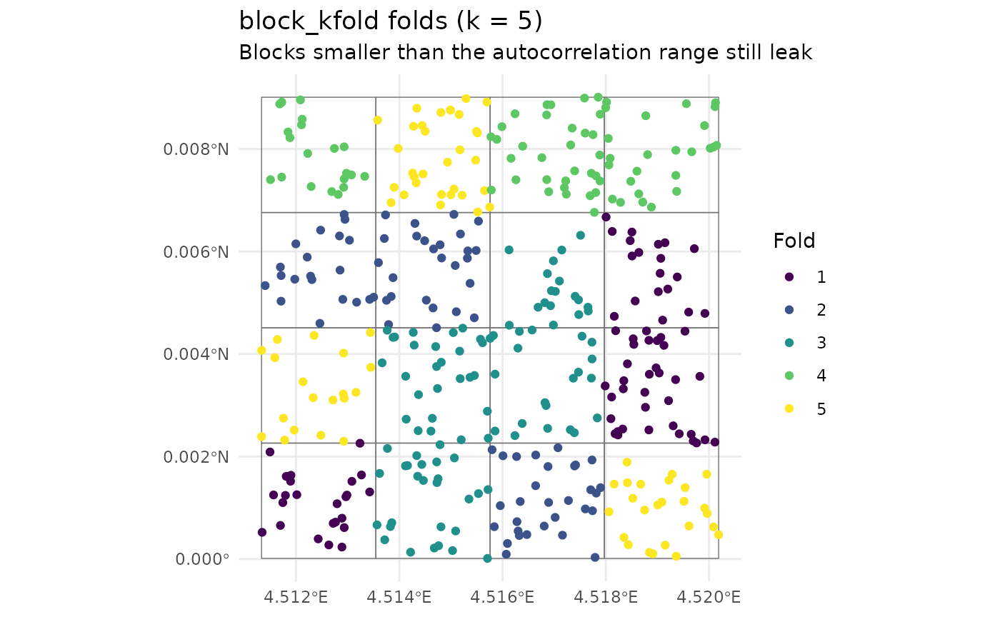
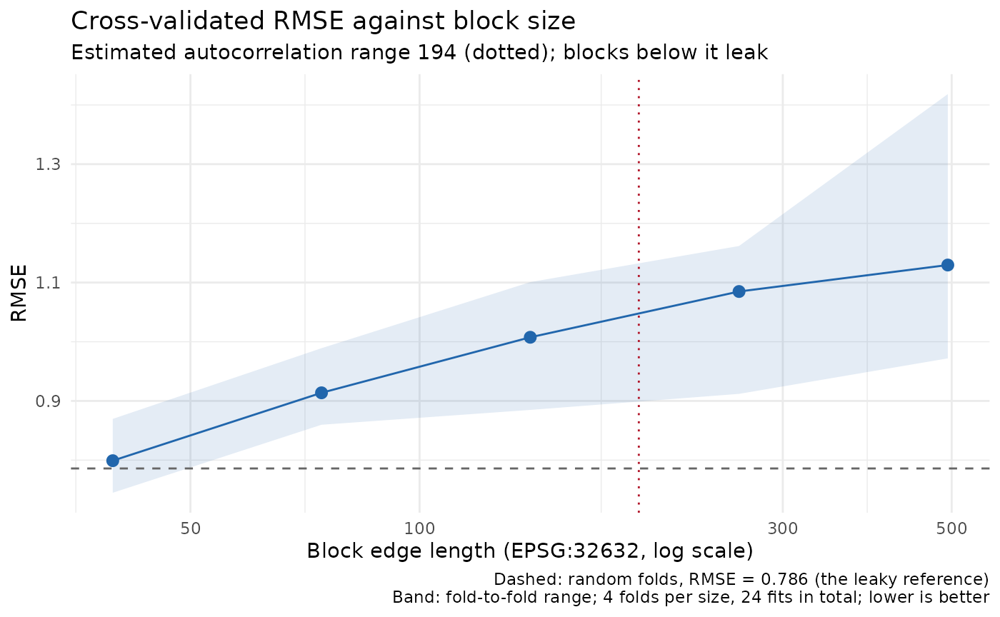
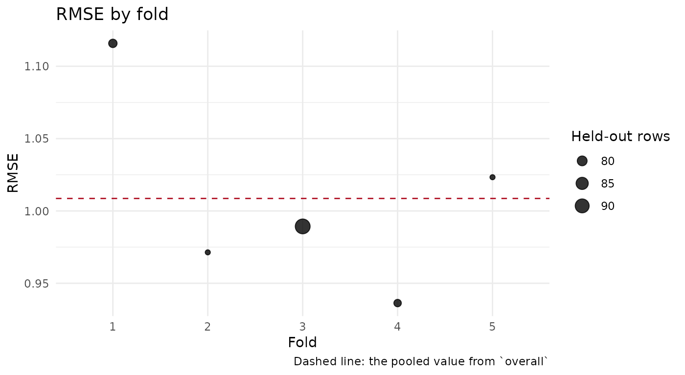

Spatial cross-validation
Justin Chase
18 September 2026
Source:vignettes/spatial-cross-validation.Rmd
spatial-cross-validation.RmdThe problem with a random fold
A random fold puts a test point’s neighbours in the training set. When the field is spatially autocorrelated, those neighbours carry the test point’s value, and a model with any capacity to memorise location will look up the answer. The cross-validation score then measures interpolation between nearby training points, and reports it as a prediction error for ground the model has never seen.
Everything else in this vignette follows from wanting a number that does not do that.
A learner you can read
The effect is easiest to see with a model whose memorising is
obvious. new_spatial_fit() is the extension point for
putting your own learner on the package’s folds, and
five-nearest-neighbour smoothing is about the simplest thing that fits
through it.
library(sf)
library(spatialkit)
knn_fit <- function(train_sf, response_var = "z", k = 5L) {
new_spatial_fit(
subclass = "knnsurf_fit",
engine = list(xy = st_coordinates(train_sf),
y = st_drop_geometry(train_sf)[[response_var]],
k = k),
formula = as.formula(paste(response_var, "~ 1")),
response_var = response_var,
predictor_vars = character(0),
data_sf = train_sf
)
}
predict.knnsurf_fit <- function(object, newdata = NULL, ...) {
e <- object$engine
xy <- if (is.null(newdata)) e$xy else st_coordinates(newdata)
vapply(seq_len(nrow(xy)), function(i) {
d <- sqrt((e$xy[, 1] - xy[i, 1])^2 + (e$xy[, 2] - xy[i, 2])^2)
mean(e$y[order(d)[seq_len(min(e$k, length(d)))]])
}, numeric(1))
}
residuals.knnsurf_fit <- function(object, ...) object$engine$y - predict(object)
fitted.knnsurf_fit <- function(object, ...) predict(object)
registerS3method("predict", "knnsurf_fit", predict.knnsurf_fit)
registerS3method("residuals", "knnsurf_fit", residuals.knnsurf_fit)
registerS3method("fitted", "knnsurf_fit", fitted.knnsurf_fit)
knn_fn <- function(train_sf, ...) knn_fit(train_sf, "z", k = 5L)Three methods and a constructor. cv_spatial() asks
nothing else of a learner, and ?new_spatial_fit documents
what each backend in the package supplies beyond this minimum.
A simulated exponential field to run it on, with an effective range of 180 units over a 1000-unit square:
The size of the effect
Same data, same learner, two fold schemes.
fr <- make_folds(pts, k = 5, method = "random_kfold", seed = 1)
fb <- make_folds(pts, k = 5, method = "block_kfold", seed = 1)
cv_random <- cv_spatial(pts, "z", character(0), fit_fn = knn_fn, folds = fr)
cv_blocked <- cv_spatial(pts, "z", character(0), fit_fn = knn_fn, folds = fb)
c(random = cv_random$overall$RMSE,
blocked = cv_blocked$overall$RMSE,
ratio = cv_blocked$overall$RMSE / cv_random$overall$RMSE)## random blocked ratio
## 0.7839092 1.0086341 1.2866722Blocked folds put the error 29% higher on this fixture. Both numbers come from the same 400 observations and the same smoother; the difference is entirely in which rows were allowed to train on which.
Neither number is the truth. The blocked one answers a harder question, and it is the question most maps are used for: what happens at a location with no observation nearby.
The five fold schemes
method |
holds out | use it when |
|---|---|---|
random_kfold |
a random 1/k of rows | you want the optimistic bound, or the data are not autocorrelated |
block_kfold |
contiguous spatial blocks | the general case; size the blocks from the correlation range |
buffered_loo |
one point, and everything within buffer of it |
n is small and you can afford n fits |
leave_location_out |
every observation from one site, named by
group_var
|
you have repeat visits and the site is the unit |
nndm |
one point, and a distance-matched exclusion | you know where you will predict, and want the fold geometry to match it |
plot_folds() draws the assignment, with the blocks
behind it when the scheme has any:
plot_folds(fb, pts)
Look at whether any fold is a thin sliver or a single corner. Fold geometry that looks wrong on the map produces a score that is wrong in a way no summary statistic will tell you about.
How wide should a block be?
Wide enough that a test block’s points are uncorrelated with the training points outside it, which makes the autocorrelation range the natural scale.
sac <- estimate_sac_range(pts, "z")
c(range = as.numeric(sac), nugget = sac_nugget(sac))## range nugget
## 194.0858896 0.1365482sac_nugget() reads the nugget off the same fitted model.
A nugget that is most of the sill says the field has little spatial
structure left to leak, and the blocked and random scores will be
close.
make_folds(auto_range = TRUE) runs this estimate and
uses it as a minimum block size:
fa <- make_folds(pts, k = 5, method = "block_kfold", response_var = "z",
auto_range = TRUE, seed = 1)
c(block_size = as.numeric(fa$params$block_size),
sac_range = as.numeric(fa$params$sac_range))## block_size sac_range
## 194.0859 194.0859params$block_size holds the range object itself, so
printing it whole also prints the directional summary;
as.numeric() above keeps the output to the two numbers.
When the variogram identifies no range,
estimate_sac_range() returns NA with the
reason attached, auto_range logs that it is falling back to
geometric blocks, and you are back to choosing a size yourself. An
NA there is a finding about the data.
?estimate_sac_range lists the four reasons and what each
one means; plot() on the returned object draws the
variogram that produced it.
Sizing it by measurement
cv_block_size_sweep() runs the cross-validation at
several block sizes and reports the curve, with a random-fold run as the
reference.
sw <- cv_block_size_sweep(pts, "z", character(0), fit_fn = knn_fn,
k = 4, n_sizes = 5, max_fits = 40,
seed = 1, quiet = TRUE)
sw## Cross-validation RMSE against block size (24 fits, k = 4, sizes in EPSG:32632)
## estimated autocorrelation range: 194.1
## block_size method blocks_used k n_folds_succeeded value fold_min
## random random_kfold NA 4 4 0.7859 0.7355
## 39.53 block_kfold 291 4 4 0.7990 0.7449
## 74.33 block_kfold 150 4 4 0.9137 0.8597
## 139.80 block_kfold 49 4 4 1.0075 0.8848
## 262.80 block_kfold 9 4 4 1.0849 0.9119
## 494.10 block_kfold 4 4 4 1.1296 0.9719
## fold_max
## 0.8257
## 0.8696
## 0.9891
## 1.1008
## 1.1618
## 1.4184
plot(sw)
Error climbs away from the random-fold reference as blocks widen, and the estimated range is marked. The height of the climb is what random folds were hiding.
Read the curve up to the range, and watch blocks_used
past it. Once blocks_used approaches k, each
fold is holding out a large contiguous piece of the study area, and the
model is being asked to extrapolate across it. Error keeps rising for a
second reason at that point, and the number stops being about
leakage.
Reading the result
overall is the pooled score and
fold_metrics is one row per fold.
plot_cv_metrics() shows the spread, which matters because a
pooled RMSE built from one catastrophic fold and four good ones
describes neither.
plot_cv_metrics(cv_blocked, metric = "RMSE")
Every row and every fold is accounted for
Four fields say what happened to the data on the way through. On the clean run above they are all zero, so here is a run where they are not.
A learner that fails on one fold:
flaky <- function(train_sf, ...) {
if (nrow(train_sf) < 320) stop("not enough training rows for this toy learner")
knn_fit(train_sf, "z", k = 5L)
}
cv_flaky <- cv_spatial(pts, "z", character(0), fit_fn = flaky, folds = fb)
cv_flaky$fold_status## fold status message
## 1 1 ok
## 2 2 ok
## 3 3 error not enough training rows for this toy learner
## 4 4 ok
## 5 5 ok
c(attempted = cv_flaky$n_folds_attempted, succeeded = cv_flaky$n_folds_succeeded)## attempted succeeded
## 5 4fold_status names every fold supplied and what became of
it, with the error text for the ones that failed. status is
one of ok, error, skipped,
dropped or worker_error. Before this existed,
a partial failure left its causes in console scrollback, which a script
or a knitted document does not keep.
Rows the data lost, and rows no fold names:
holed <- pts
holed$z[c(3, 17, 42)] <- NA # three rows will be dropped
part <- make_folds(pts[1:300, ], k = 4, method = "block_kfold", seed = 1)
cv_acc <- cv_spatial(holed, "z", character(0), fit_fn = knn_fn, folds = part)
c(n_dropped = cv_acc$n_dropped,
n_orphans = length(cv_acc$orphan_rows),
n_unknown_ids = cv_acc$n_unknown_ids)## n_dropped n_orphans n_unknown_ids
## 3 100 3n_dropped is how many rows
prep_model_data() removed for a missing or non-finite value
before any fold was fitted. orphan_rows holds the row IDs
no fold names, which here is rows 301 to 400, because the folds were
built on the first 300. n_unknown_ids counts the distinct
row IDs the folds name that the data does not have, which here is the
three rows the NAs removed.
The two mirror each other, and which one is non-zero tells you which way the mismatch runs:
cv_rev <- cv_spatial(pts[1:300, ], "z", character(0), fit_fn = knn_fn, folds = fb)
c(n_orphans = length(cv_rev$orphan_rows), n_unknown_ids = cv_rev$n_unknown_ids)## n_orphans n_unknown_ids
## 0 100Folds built on more rows than the data has give
n_unknown_ids; folds built on fewer give
orphan_rows. Both are zero when the folds and the data
agree, which is the only case in which the score covers every
observation.
Calibration, for a model with intervals
A Bayesian fit predicts an interval, and the question becomes whether
the intervals are the width they claim. plot_calibration()
draws nominal coverage against realised coverage per fold, from a
cv_bayes() result.
cvb <- cv_bayes(pts, "z", character(0), folds = fb) # needs brms
plot_calibration(cvb)Points below the diagonal are intervals that are too narrow: a
nominal 90 percent interval containing 70 percent of the held-out values
is the model reporting more confidence than it has earned. This chunk is
not run here, because it needs brms and a Stan
toolchain.
Next
vignette("resolution") covers choosing a cell count
before any of this. vignette("spatialkit_nc_demo") runs the
whole pipeline on real boundaries. ?make_folds documents
every scheme and its arguments, ?cv_spatial the return
value in full, and ?cv_block_size_sweep the fit budget that
max_fits caps.